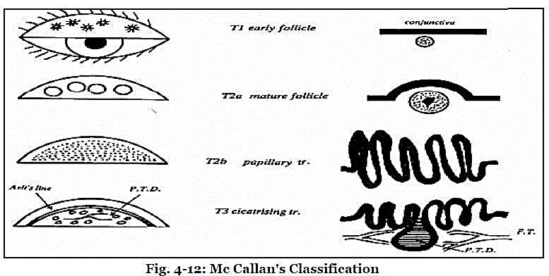

Conjunctiva · Trachoma — clinical picture
T3: starting cicatrization and T4
T3: (Starting cicatrization)
- It is the stage which shows start of cicatrization (healing or scarring).
- Clinicopathologic manifestations:
- Signs of active trachoma 2 (follicles, papillae).
- Signs of scarring: Appear as star shaped scars or radiating lines white in color, on the upper tarsal conjunctiva.
- Arlt's line: a white line of scar tissue involving the sulcus subtarsalis.
- PTDs (post-trachomatous degenerations): yellowish white degenerated epithelial cells and inspissated mucus imprisoned in conjunctival crypts between adjacent papillae (variable sized spots), appear on the tarsal conjunctiva.
- PTCs (post-trachomatous concretions): chalky white raised, hard small lesions, appear on tarsal conjunctiva. Pathologically, they are formed of calcified debris, dried secretion and shed epithelial cells (calcification of PTDs).
T4: (Cicatrized or healed trachoma)
- Only scar tissue is present (Fig. 4-11).
- No active inflammation (i.e. no follicles or papillae), and the disease is no longer infectious (Fig. 4-12)
